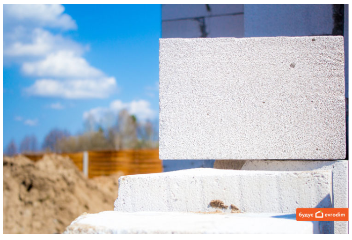

Енергоефективність - основна характеристика будинків від Evrodim. Застосована нами технологія будівництва дозволяє комфортно почуватися в будинку за будь-якої погоди. Досягається така зручність за рахунок матеріалів, які ми використовуємо при зведенні будинків, - SIP-панелі та газоблок. Міцність, тепло, швидкість та екологічність - такими словами варто описати SIP-панель. Будинки, зведені за такою технологією, характеризуються високим рівнем теплоізоляції. І взимку, і влітку в такому домі буде комфортна температура. Будинок із SIP-панелей зводиться досить швидко - 1,5 - 2 місяці. І все це завдяки використанню канадської технології (SIP). Він міцний та надійний. А термін його служби становить більше 80 років. Разом з тим, дім побудований із сендвіч-панелей, є екологічним. Часто технологію SIP називають “зеленим” будівництвом. Екологічність таких будинків проявляється і в матеріалі, який використовується при будівництві (95% SIP-панелі - дерев’яні тріски та натуральні смоли для склеювання OSB-плит і пінополістиролу), і в турботі про навколишнє середовище - в будівництві не використовується важка техніка, яка забруднює повітря, та залишається мінімум будівельних відходів.
Описати газоблок, як будівельний матеріал, можна такими словами: тепло, зручність, економія та довговічність. Спеціальна пориста структура цього матеріалу (він на 70% складається з повітря) зберігає тепло в домі. Завдяки такій теплоізоляції, власники будинку платитимуть за комунальні послуги значно менше. Будинок з газоблоку, без перебільшення, є довговічним, міцним та надійним. Якщо ви своєчасно та регулярно доглядатимете за ним, то він добросовісно прослужить 80-100 років. Такий дім не боїться дощу, снігу, морозів та інших несприятливих погодних умов. Цей матеріал зручний в обробці та укладанні. Таким чином, ваш дім будується легко та швидко. І як результат - гарний, якісний та надійний будинок.
Created by Savelieva Anna KV-61